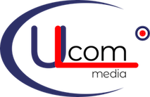

Голая аббревиатура скучна. Поэтому берём не буквы текущего логотипа, а его графические гены: орбиту, красную трассу и узел-мишень. Каждый вариант ниже тянет конкретный ген и строится вокруг кириллической ЮКМ.

Что в текущем знаке действительно работает
1Эллипс-орбита.Размашистый овал вокруг названия. Самый запоминающийся элемент. Читается как охват территории, а для оператора «Москва и область» это буквально смысл бизнеса.
2Красная трасса.Горизонталь под словом, уходящая вправо. Линия, магистраль, направление.
3Узел-мишень.Красная точка в кольце справа сверху. Точка присутствия на орбите.
4Пара navy плюс красный.Спокойная база и один горячий акцент. Менять не нужно.
×Что устарело.Сами буквы и латиница, рыхлая геометрия овала, серая «media» довеском, нет масштабируемого знака под фавикон.
Варианты ЮКМ с дополнительными элементами
Плашка под каждым вариантом показывает, какой ген оригинала он несёт.
ОрбитаПрямой наследник: аббревиатура внутри овала, узел сидит на орбите и разрывает её.ген 1 + 3
Узел в букве ЮКольцо буквы Ю само становится мишенью с красным ядром. Уникально кириллический ход, который латиница дать не могла.ген 3, ключевой
Красная трассаГоризонталь из оригинала уходит вправо и упирается в узел. Движение и направление.ген 2 + 3
Кольцо с узломОвал сжат в круг: компактно, читается на 16px, готовый фавикон и аватар.ген 1 + 3
Дуги-скобкиОвал разомкнут на две дуги, они обнимают знак с боков. Легче замкнутого кольца, аббревиатура дышит.ген 1
Плашка с узломВыворотка в синем блоке, красный узел как точка. Максимально контрастно на технике и в интерфейсе.ген 3 + 4
Сигнал-волнаКрасная линия превращается в импульс. Привязка к скорости отклика и живому трафику.ген 2
Диагональная трассаМагистраль идёт сквозь знак от узла к узлу. Динамика, «мы соединяем две точки».ген 2 + 3
Двойная орбитаВнешнее кольцо магистрали и внутреннее кольцо области. Узел на внешнем контуре.ген 1 + 3
Магистраль с узламиПод знаком схема сети: два узла на концах, красный посередине. Инфраструктура прямым текстом.ген 2 + 3
Ю охватывает КМКольцо буквы Ю разрастается и заключает в себя КМ. Орбита и аббревиатура становятся одним объектом.ген 1 + 3, самый смелый
Точка присутствияУзел-пин стоит над знаком как метка на карте, снизу линия магистрали. Географический акцент.ген 3